GL-260 User Manual (Canonical Source)¶
This file is the authoritative manual source for GL-260 user documentation.
- Source of truth:
docs/user-manual.md - Generated artifact:
docs/user-manual.html - Build command:
python scripts/build_user_manual.py - Validation command:
python scripts/build_user_manual.py --check
Current release: v4.13.6
Analysis timeline pH terminology:
- Equilibrium pH (Guidance): canonical displayed cycle/final pH from guidance/equilibrium target-state estimation.
- Corrected pH: measured-anchor calibrated pH overlay used for Analysis alignment diagnostics.
- Reference pH: planning/reference curve pH (cycle-index aligned or CO2-aligned).
- Solver-context thermo pH: runtime diagnostics-only developer context; not displayed in the user-facing Speciation Snapshot tile.
- final_ph / final_pH: compatibility aliases mapped to equilibrium_ph in timeline/report/export payloads.
Table of Contents¶
- Manual Scope and Governance
- Application Navigation Map
- Quickstart Workflow
- Data Import and Sheet Selection Workflow
- Column Mapping and Apply Workflow
- Plot Settings Workflow
- Combined Triple-Axis Plot Workflow
- Plot Elements and Annotation Workflow
- Cycle Analysis Workflow (Automatic and Manual)
- Plot and Cycle Export Workflows
- Advanced Speciation and Equilibrium Workflows
- Calculation Overview
- Compare Profiles Workflow
- Ledger Workflow
- Final Report Workflow
- Profiles and Settings Persistence
- Troubleshooting and Recovery Matrix
- Advanced / Power User Appendix
- Screenshot Contract and Asset Index
Manual Scope and Governance¶
Purpose¶
Define the operating contract for this manual so future updates remain complete and consistent.
Preconditions¶
- You are working in the GL-260 repository root.
- You can run Python from terminal.
Inputs¶
- Current application behavior from
GL-260 Data Analysis and Plotter.py. - Release notes and UI changes from active development.
Step-by-step actions¶
- Update this Markdown file when any user-facing behavior, workflow, or UI control changes.
- Run
python scripts/build_user_manual.pyto regenerate HTML. - Run
python scripts/build_user_manual.py --checkto confirm generated HTML is current. - Ensure screenshot references resolve and correspond to current UI behavior.
- Confirm
README.mdcontinues to point users to canonical docs indocs/.
Expected outputs¶
- A synchronized pair:
docs/user-manual.mdanddocs/user-manual.html. - Accurate, searchable documentation for all major workflows.
Common errors and recovery¶
- Error:
docs/user-manual.htmlmissing or stale. - Recovery: run the build command and re-run
--check. - Error: New feature exists in app but not documented.
- Recovery: add/expand the relevant section and update changelog/release checklist.
Related exports/artifacts¶
docs/user-manual.htmlRELEASE_CHECKLIST.md
Application Navigation Map¶
Purpose¶
Provide a high-level map of tabs, menus, and workflow order.
Preconditions¶
- Application is launched and responsive.
- A dataset is available (Excel workbook or GL-260 CSV).
Inputs¶
- Top menu:
File,View,Profiles,Tools,General Plotter. - Primary tabs:
Data,Columns,Plot Settings,Cycle Analysis,Compare,Ledger,Advanced Solubility,Final Report.
Step-by-step actions¶
- Start in Data tab to load source files and choose sheet context.
- Move to Columns tab to map traces and required fields.
- Use Plot Settings to configure axes, ranges, legend behavior, and export defaults.
- Open Cycle Analysis for marker detection, manual marker editing, and cycle metrics.
- Use Advanced Solubility for speciation/equilibrium workflows and cycle timeline analysis.
- Use Compare to evaluate two profiles side-by-side.
- Use Ledger to consolidate run-level metrics and export business-facing tables.
- Use Final Report to compose and export PDF/PNG/HTML deliverables.
Expected outputs¶
- Correct workflow progression from raw data to publication-ready report outputs.
Common errors and recovery¶
- Error: Later tabs show missing data warnings.
- Recovery: return to
DataandColumns, then re-run Apply Column Selection. - Error: Compare/Ledger values appear stale.
- Recovery: refresh profile load and re-run cycle/speciation workflows before compare.
Related exports/artifacts¶
- Plot exports (
PNG/PDF/SVG) - Cycle timeline exports (
CSV/plot/table) - Compare CSV export
- Ledger CSV export
- Final Report (
PDF/PNG/HTML)
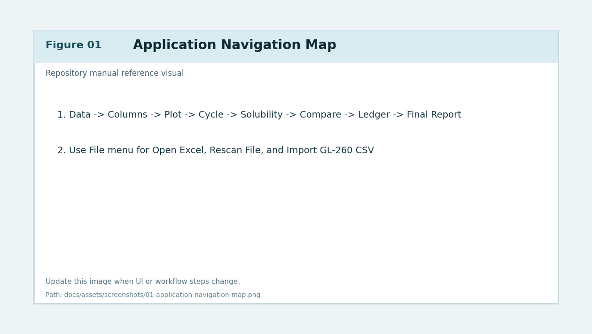
Figure 1. Application-level navigation and workflow map.
Quickstart Workflow¶
Purpose¶
Give an end-to-end baseline path from input data to final report.
Preconditions¶
- App launched from repository root using the intended environment.
- Input data file is accessible.
Inputs¶
- Workbook (
.xlsx) or GL-260 CSV. - Optional saved profile for quick setup.
Step-by-step actions¶
- On Data tab, select source file and target sheet.
- On Columns tab, map all required series and click Apply Column Selection.
- On Plot Settings tab, configure ranges and legend behavior.
- Generate core plots and the Combined Triple-Axis plot.
- Open Cycle Analysis and run marker detection.
- Manually adjust peaks/troughs if needed, then confirm cycle summary.
- Open Advanced Solubility and send cycle payload for equilibrium analysis.
- Optionally open Compare for profile-to-profile analysis.
- Add/validate entries in Ledger.
- Configure sections in Final Report and generate PDF/PNG/HTML output.
Expected outputs¶
- Validated cycle metrics.
- Optional speciation/equilibrium outputs.
- Final report files suitable for review and distribution.
Common errors and recovery¶
- Error: Combined/final report generation blocked.
- Recovery: ensure columns were applied after latest data or mapping changes.
- Error: Cycle output inconsistent with expected behavior.
- Recovery: re-run marker detection with adjusted smoothing/radius and review manual edits.
Related exports/artifacts¶
- Combined plot artifacts
- Cycle metrics CSV
- Speciation CSV/JSON
- Final report export files
Data Import and Sheet Selection Workflow¶
Purpose¶
Load source datasets and establish the active sheet/data context for downstream analysis.
Preconditions¶
- Source file path is known.
- File format is either supported workbook or GL-260 CSV source.
Inputs¶
File -> Open Excel...File -> Import GL-260 CSV...File -> Rescan File- Data tab sheet selector and import controls
Step-by-step actions¶
- Open File -> Open Excel... and choose workbook.
- Confirm detected sheet list populates in Data tab.
- Select target sheet from selector.
- If source is CSV, choose Import GL-260 CSV....
- In CSV dialog:
- Browse to CSV source.
- Confirm parsed table preview.
- Set output workbook/sheet naming.
- Complete import and accept confirmation. - Click Rescan File when file content changes externally.
- Confirm imported/selected sheet now contains expected headers and row counts.
Expected outputs¶
- Active file path and sheet context are set.
- Data tab status confirms loaded dataset.
Common errors and recovery¶
- Error: sheet list empty.
- Recovery: verify workbook path and that file is not locked/corrupted.
- Error: CSV import fails parse.
- Recovery: validate delimiter/header format and re-run import.
- Error: wrong sheet selected.
- Recovery: switch sheet and re-apply column selection.
Related exports/artifacts¶
- Imported workbook generated from CSV ingest flow.
- App state updated with active sheet metadata.
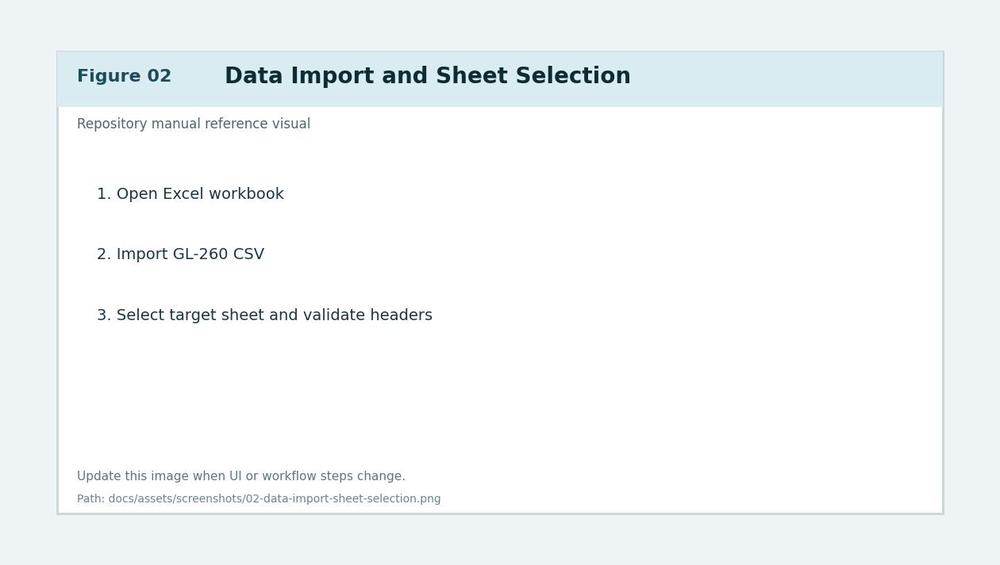
Figure 2. Data tab workflow with sheet selection and CSV import path.
Column Mapping and Apply Workflow¶
Purpose¶
Map source columns to pressure/temperature/derivative traces and commit mappings for analysis.
Preconditions¶
- Dataset loaded and active sheet selected.
- Headers are visible and interpretable.
Inputs¶
- Columns tab mapping controls.
- Required and optional series selectors.
- Apply Column Selection action.
Step-by-step actions¶
- Open Columns tab.
- Map required fields (pressure and other required core traces).
- Map optional channels (additional temperature or derivative traces).
- Validate units and naming conventions for selected columns.
- Click Apply Column Selection.
- Wait for completion status (background apply paths may take noticeable time).
- Confirm downstream tabs now recognize selected data series.
Expected outputs¶
- Canonical column mappings persist into runtime state.
- Plot/Cycle/Speciation workflows are unlocked for current dataset.
Common errors and recovery¶
- Error: apply fails due to invalid mapping.
- Recovery: clear conflicting selections and remap required fields.
- Error: later workflows still report missing columns.
- Recovery: re-open Columns and apply again after any sheet change.
Related exports/artifacts¶
- Updated in-memory mapping state.
- Profile persistence payloads when saved.
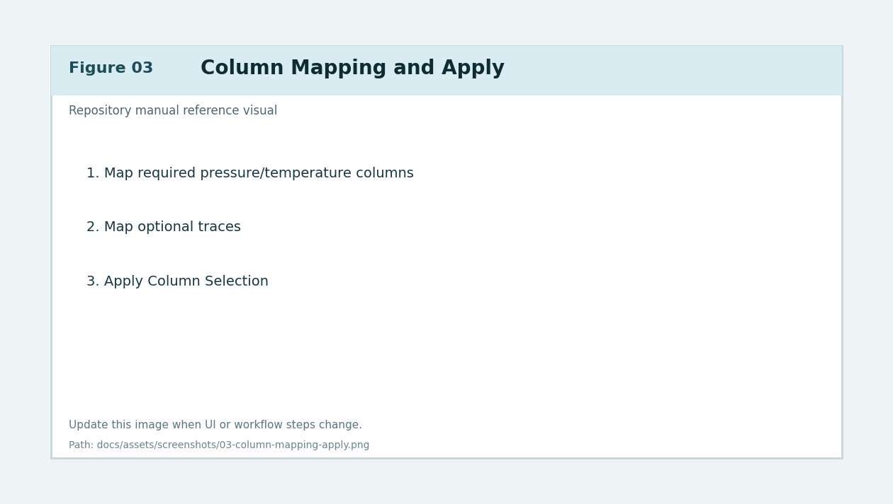
Figure 3. Columns tab mapping and apply workflow.
Plot Settings Workflow¶
Purpose¶
Control how plot figures render, including ranges, legends, fonts, cycle overlays, and export behavior.
Preconditions¶
- Column selections applied successfully.
- Plot-ready dataset available.
Inputs¶
- Plot Settings tab panels (axes, legends, cycle integration, rendering options, export DPI).
- Plot refresh/generation actions.
Step-by-step actions¶
- Open Plot Settings tab.
- Configure x/y auto-range and manual range overrides where needed.
- Set axis label text and label padding options.
- Configure tick spacing and tick font size policies.
- Tune legend placement and anchor controls.
- Configure cycle integration options:
- show/hide cycle markers on core plots
- show/hide cycle legend
- include/exclude moles info in legend - Configure global export DPI and layout behavior.
- Generate or refresh plots and validate expected visual output.
Expected outputs¶
- Plot visuals match configured ranges/style/legend policies.
- Export behavior aligns with display intent.
Common errors and recovery¶
- Error: axis labels overlap or clip.
- Recovery: adjust label pads, margins, or export padding values.
- Error: legend obscures data.
- Recovery: re-anchor legend or enable centered/offset behavior.
- Error: stale plot rendering after setting change.
- Recovery: trigger explicit refresh and verify full rebuild path where needed.
Related exports/artifacts¶
- Core plot figures.
- Persisted plot settings in app settings/profile payloads.
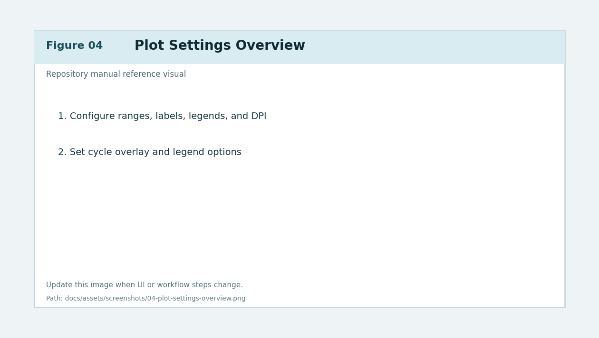
Figure 4. Plot Settings tab controls for rendering and export behavior.
Combined Triple-Axis Plot Workflow¶
Purpose¶
Build and tune the combined figure that overlays pressure, temperature, and derivative-oriented traces with cycle context.
Preconditions¶
- Data and columns are ready.
- Plot settings are configured.
Inputs¶
- Combined triple-axis controls on Plot Settings tab.
- Combined plot generation/refresh actions.
- Axis assignment toggles and right/third-axis options.
Step-by-step actions¶
- Select desired datasets for primary/right/third axis roles.
- Enable or disable temperature and derivative axes as needed.
- Configure derivative axis offset and axis label overrides.
- Set combined legend behavior and cycle legend reference axis/corner.
- Generate Figure 1+2: Combined Triple-Axis.
- Validate alignment of axis scales and readability of overlays.
- Adjust layout margin profiles for display and export parity.
- Rebuild and verify that cycle overlays and legends remain stable.
Expected outputs¶
- A single combined plot with aligned x-axis context and readable multi-axis overlays.
Common errors and recovery¶
- Error: right/third axis not visible.
- Recovery: confirm axis enable flags and dataset assignments.
- Error: cycle legend position drifts.
- Recovery: reset legend position and apply configured reference axis/corner.
- Error: export layout differs from display.
- Recovery: adjust export margins/label pads and validate with preview.
Related exports/artifacts¶
- Combined plot image/PDF/SVG exports.
- Final report combined plot pages.
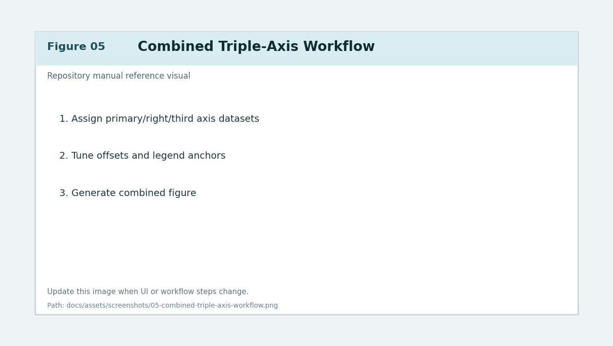
Figure 5. Combined triple-axis controls and render workflow.
Plot Elements and Annotation Workflow¶
Purpose¶
Add, edit, and persist visual annotations and overlays across plot workflows.
Preconditions¶
- At least one plot is generated.
- Target plot tab is active.
Inputs¶
- Plot Elements... dialogs from plot/compare/cycle preview contexts.
- Element list, style controls, placement controls, z-order controls.
Step-by-step actions¶
- Open plot element editor for target figure.
- Add element type (line/text/shape/ring/other available element classes).
- Set anchor coordinates and axis target.
- Configure line width, style, fill, alpha, and layer order.
- Apply edits and validate on live figure.
- Repeat for multiple elements and verify no overlap conflicts.
- Save profile/settings so element state persists.
- Close editor and confirm refresh behavior matches final expected state.
Expected outputs¶
- Target plot includes selected visual elements with persistent styling.
Common errors and recovery¶
- Error: element appears on wrong axis/context.
- Recovery: update element axis target and anchor coordinates.
- Error: element not visible.
- Recovery: adjust z-order, color contrast, and visibility toggles.
- Error: close editor loses pending edits.
- Recovery: ensure apply action is used before close when live update is off.
Related exports/artifacts¶
- Plot exports containing persisted annotations.
- Profile-scoped element definitions.
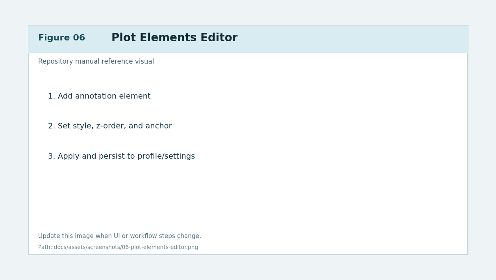
Figure 6. Plot Elements editor and annotation lifecycle.
Cycle Analysis Workflow (Automatic and Manual)¶
Purpose¶
Detect cycles, compute cycle metrics/moles uptake, and support manual correction of markers.
Preconditions¶
- Columns applied and cycle-relevant traces selected.
- Plot context available for marker visualization.
Inputs¶
- Cycle Analysis tab controls:
- detection thresholds
- smoothing window
- manual snap radius
- auto refine radius
- marker import/export tools
Step-by-step actions¶
- Open Cycle Analysis tab.
- Start automatic detection.
- Review detected peaks/troughs and segmentation.
- If needed, switch to manual edit behavior:
- add marker
- remove marker
- undo/redo marker changes - Tune smoothing and snap/refine settings.
- Re-run analysis and compare summary changes.
- Validate cycle summary metrics and conversion/moles outputs.
- Export markers (
JSON/CSV) and cycle results (CSV) when required. - Push cycle payloads to Advanced Solubility workflows as needed.
Expected outputs¶
- Reliable cycle segmentation with vetted peak/trough markers.
- Cycle summary text and per-cycle metrics ready for downstream workflows.
Common errors and recovery¶
- Error: too many/too few cycles detected.
- Recovery: adjust smoothing window and detection thresholds; verify selected trace.
- Error: manual edit snaps to incorrect point.
- Recovery: increase/decrease manual snap radius and retry.
- Error: cycle summary missing conversion fields.
- Recovery: confirm required conversion inputs/columns are mapped.
Related exports/artifacts¶
- Marker exports (
JSON/CSV) - Cycle results CSV
- Cycle payloads consumed by Advanced Solubility and Final Report
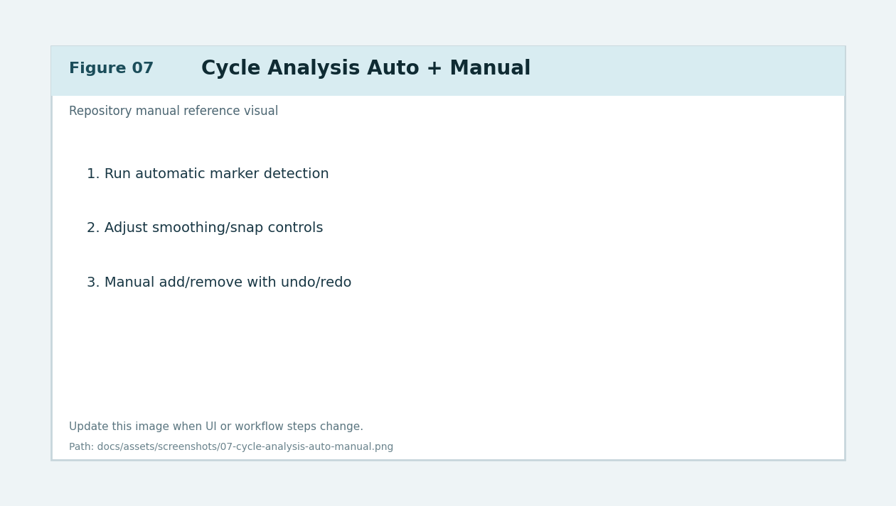
Figure 7. Cycle Analysis tab including auto-detect and manual marker editing.
Plot and Cycle Export Workflows¶
Purpose¶
Export reproducible plot and cycle artifacts for validation, reporting, and external review.
Preconditions¶
- Relevant plot or cycle view already generated.
Inputs¶
- Plot export controls (
PNG/PDF/SVG). - Global export DPI setting.
- Cycle export controls (summary PNG, results CSV, marker JSON/CSV).
Step-by-step actions¶
- From target plot tab, open export controls and select formats.
- Confirm output dimensions and DPI.
- Export and verify files open correctly.
- In Cycle Analysis, export:
- marker set
- cycle results table
- summary image artifacts - For timeline workflows in Advanced Solubility, use dedicated timeline export controls.
- Archive artifacts using run-specific naming convention.
Expected outputs¶
- Complete set of reproducible visual and tabular artifacts.
Common errors and recovery¶
- Error: export size mismatch.
- Recovery: verify export DPI and plot dimension settings.
- Error: missing legend/annotation in export.
- Recovery: re-generate plot and ensure overlays are enabled before export.
- Error: file write denied.
- Recovery: choose writable destination and avoid locked/open files.
Related exports/artifacts¶
- Plot file set (
PNG/PDF/SVG) - Cycle summary and CSV exports
Advanced Speciation and Equilibrium Workflows¶
Purpose¶
Perform chemistry-driven analyses including cycle-to-speciation projections, planning guidance, and equilibrium summaries.
Preconditions¶
- Cycle analysis has completed or manual cycle payload is defined.
- Advanced Solubility tab is available and initialized.
Inputs¶
- Advanced Solubility controls:
- send cycle to solubility
- cycle timeline options
- analysis dashboard selectors
- model mode and diagnostics controls
- export actions (PNG/CSV/JSON/timeline artifacts)
Step-by-step actions¶
- Open Advanced Solubility tab.
- Send cycle payload from Cycle Analysis.
- Choose analysis mode/model settings for speciation/equilibrium workflow.
- Run computation and inspect:
- Analysis dashboard tiles
- selected-cycle notes
- dashboard metrics
- cycle timeline visualization/table - For Analysis workflow measured-pH anchoring:
- add one or more rows inMeasured pH Anchors(Cycle,Measured pH)
- keep rows aligned to detected cycle IDs
- useClear Anchorsto reset the row editor when needed
- useTarget pH Controlsdirectly below the anchor section to set the shared target-pH slider value
- run Analysis or click Recompute Calibration - Use the Analysis Input & Controls card (inside Analysis workflow inputs) for:
- Import from Cycle Analysis
- Run Analysis
- Recompute Calibration
- Use ML-corrected pH in this run (toggle)
- editingCycle timeline plot title
- deterministic action semantics:- Run Analysis refreshes from cycle payload and applies compatible saved corrections; no forced ML retraining.
- Recompute Calibration keeps current cycle payload, recalibrates/relearns on current run data, then applies correction per toggle.
- Verify anchored outputs:
- measured pH marker appears on cycle timeline plot
- equilibrium pH trajectory appears alongside corrected/planning trajectories
- corrected per-cycle and cumulative CO2 uptake values appear next to original values
- dashboard tile Reaction Progress uses corrected-primary completion/regime text and shows required CO2 context
- dashboard tile Completion Meter shows adjacent pre-anchor and corrected completion gauges
- dashboard tile Speciation Snapshot shows selected-cycle-aligned pH source lines and latest corrected speciation/required-CO2 context
- Speciation Snapshot also surfaces anchor count/source usage, learning controls, and terminal-objective endpoint diagnostics
- Speciation Snapshot does not display solver-context thermo pH; that line is shown in Runtime diagnostics only
- dashboard tile Target Gap & CO2 Needed visualizes corrected cumulative uptake vs required total to the target pH slider value
- dashboard tile Forecast to Target shows slowdown-aware remaining cycle/time forecast with confidence
- Warnings / Narrative / Math Context now renders explicit context sections (Primary,Forced,Reaction,Closed-System,Analysis Alignment) with context-specific metrics to avoid forced-vs-primary conflicts - Edit
Cycle timeline plot title(Planning/Analysis/Reprocessing shared field):
- default format is<Job Information> Reaction Simulation
- commits apply onEnteror when the input loses focus (FocusOut)
- typing alone does not trigger full timeline refresh - Use timeline actions in two rows under Selected-Cycle Notes And Export:
- interactive row: Plot Preview, Open Plot in New Tab, Layout Manager..., Add Plot Elements..., Expand Timeline
- export/navigation row: Export Timeline CSV, Export To Workbook, Export Timeline Plot, Export Timeline Table, Export Options..., Workbook Export Options..., Scroll to Latest - Use Open Plot in New Tab to render cycle timeline in the main plot notebook with combined-style generated-tab controls (Refresh/Close/Plot Settings/Data Trace Settings/Plot Elements/Save As/Plot Preview/format toggles). Re-opening refreshes/reuses the same timeline tab.
- Use cycle selector tools to inspect cycle-specific behavior.
- Export outputs:
- summary PNG
- CSV species table
- JSON summary
- timeline CSV/plot/table - Use Send Dashboard Stats to Ledger when values should be captured in ledger entries (corrected-primary uptake/yield are prefilled; raw baselines remain in notes).
- In Analysis dashboard verify core tile coverage:
- Analysis Overview / Mode Context
- Key Results Summary
- Target Gap & Forecast
- Speciation / Equilibrium Breakdown
- Inputs / Assumptions / Context
- Warnings / Diagnostics - Optional detail tiles remain available through tile configuration (hidden by default) and include completion/forensics/comparison/visual detail surfaces.
- Cycle Comparison Explorer, Cycle Speciation Timeline Explorer/plot, and Selected-Cycle Notes and Export remain in their existing locations.
Expected outputs¶
- Speciation/equilibrium summaries tied to cycle-level data.
- Timeline artifacts and dashboard metrics suitable for compare/report/ledger.
- Measured-pH anchor editor rows persist globally in
solubility_inputsand restore on Analysis tab build/restart. - Latest Analysis run payload restores after restart when workspace context/signatures match persisted
sol_analysis_last_result_v2metadata. - Measured-pH anchored learning history and measured-anchor library persist in global settings stores and are reused across profiles when chemistry/model compatibility gates pass.
v4.13.6 Release Note (Calculation Transparency Upgrade)¶
- Added a top-level Calculation Overview section with raw LaTeX equations for pH, speciation, activity correction, requirement precedence, completion metrics, target gap, and forecast.
- Added model-by-model derivation documentation for:
- Debye-Huckel Full
- Debye-Huckel Capped
- Davies Limited
- Pitzer Lite
- Aqion Closed
- NaOH-CO2 Pitzer HMW (deepest detail)
- Expanded Advanced Speciation Math Viewer sections to include symbolic equations, substitutions, evaluated results, units, and explanatory notes for:
- inputs/constants/basis conversions,
- active-model pH/speciation pathway,
- CO2 requirement/completion/forecast derivations,
- cycle-level derivations.
- Added Math Viewer cycle scope selector (default
Latest) for cycle-specific derivation filtering while retaining global sections. - Added dedicated NaOH Pitzer traceability entries for context normalization, Rust/Python health-gated path routing, and downstream species terms that feed dashboard metrics.
- Added targeted regressions covering cycle selector behavior, section/LaTeX payload completeness, requirement-source precedence, and NaOH Pitzer detail-section emission.
v4.13.5 Release Note (Analysis CO2 Parity + pH Alignment + Hybrid ML Correction)¶
- Analysis runtime now prefers cycle-derived reference traces as the primary source and uses planning reference only as fallback:
analysis_reference_trace_source = analysis_cyclewhen cycle-derived trace is available.analysis_reference_trace_source = planning_fallbackonly when cycle-derived trace is unavailable.- Added Analysis action/runtime metadata for deterministic traceability:
analysis_reference_trace_sourceanalysis_last_actionml_correction_appliedml_training_sample_countml_fit_error- Added a shared selected-cycle resolver so
Current Cycle,Simulation Compare,Speciation Snapshot, and mapped pH text all read from aligned selected-cycle rows. - Updated Speciation Snapshot pH source policy:
- canonical user-facing pH lines are selected-cycle aligned,
- solver-context thermo pH line removed from this tile and moved to Runtime diagnostics text.
- Added hybrid Analysis pH correction pipeline:
- baseline measured-anchor calibration,
- residual ML ridge correction over chemistry + cycle features,
- equilibrium-consistent carbonate fraction recomputation from corrected pH.
- Added global incremental ML stores/settings (chemistry-gated compatibility):
analysis_ml_training_storeanalysis_ml_model_stateanalysis_apply_ml_correction_defaultanalysis_ml_model_version- Added per-cycle additive timeline fields:
ml_corrected_phml_corrected_fractions- Added Analysis input toggle:
- Use ML-corrected pH in this run (default ON).
- Deterministic action semantics:
- Run Analysis: refresh from imported cycle payload, rerun simulation, apply compatible saved corrections per toggle, no forced retraining.
- Recompute Calibration: no payload re-apply; recalibrate/relearn on current run data, then apply per toggle.
v4.13.4 Release Note (Tab-Aware Data Trace + Deterministic Timeline Export Anchor)¶
- Data Trace Settings now resolves trace rows by active plot tab context:
- cycle timeline tab opens timeline trace keys,
- combined/core tabs keep their existing trace-key sets.
- Timeline trace settings persist under
cycle_plot_prefs.trace_serieswhile combined/core trace settings remain inscatter_series. - Timeline Data Trace controls now support and apply:
enabled,color,marker,size,linestyle,linewidth,zorder,start_x.- Timeline trace enable/disable and advanced overrides are applied in both display and export figure builds.
- Timeline export legend clearance now uses a deterministic export-prepare path with bottom-wide safe anchor + bottom margin floor before final export draw.
- Export-mode overlap retry/guard loops were simplified to avoid redundant multi-pass behavior; overlap diagnostics remain available for troubleshooting.
v4.13.3 Release Note (Cycle Timeline New Tab + Generated-Tab Pipeline Reuse)¶
- Added Open Plot in New Tab beside Plot Preview in Advanced Speciation timeline actions.
- Cycle timeline now supports profile-backed generated notebook rendering (
fig_cycle_timeline_tab) mapped to shared plot IDfig_cycle_timeline. - New timeline notebook tab uses combined-style generated-tab controls and lifecycle routing (open/refresh/save/export/close) without duplicating render pipeline logic.
- Re-open behavior reuses one timeline notebook tab instance; users manually refresh after workflow reruns.
- Split Selected-Cycle Notes And Export controls into two rows (interactive row + export/navigation row) for clearer workflow grouping.
v4.13.2 Release Note (Timeline Export Legend Parity + Analysis Restart Rehydrate)¶
- Cycle timeline plot export now captures current display legend overrides immediately before export build so exported main-legend placement matches live/preview placement.
- Timeline export save-path parity remains unchanged (no
bbox_inches="tight"crop path reintroduced). - Startup Advanced Speciation refresh now routes restored workflow payloads through the shared widget rehydrate path so Analysis timeline/dashboard surfaces repopulate consistently after restart when context/signatures match.
- Added regression coverage for startup widget-path Analysis restore behavior.
v4.13.0 Release Note (Analysis UX Consolidation + Unified Scrolling)¶
- Analysis dashboard now uses a core-first six-tile hierarchy:
- Analysis Overview / Mode Context
- Key Results Summary
- Target Gap & Forecast
- Speciation / Equilibrium Breakdown
- Inputs / Assumptions / Context
- Warnings / Diagnostics
- Lower-priority Analysis detail tiles remain configurable/accessible, but are hidden by default to reduce vertical sprawl.
- Analysis actions were relocated into one colocated Input & Controls card in Analysis workflow inputs:
- Import from Cycle Analysis
- Run Analysis
- Recompute Calibration
- shared
Cycle timeline plot title - Analysis tab wheel routing now uses unified outer scrolling with local-widget edge handoff:
- Text/Listbox/Treeview widgets consume wheel input while they can scroll.
- At top/bottom boundaries, wheel input is handed off to the outer Analysis scroll region.
- Analysis-specific local text wheel-capture bindings were removed to prevent dead-end scroll traps.
- No chemistry/speciation/equilibrium solver logic was changed by this UX refactor.
v4.12.3 Release Note (Equilibrium-Primary pH Presentation Contract)¶
- Advanced Speciation workflows now present one authoritative pH method to users: guidance/equilibrium target-state estimate.
- Planning, Analysis, and Reprocessing timeline tables/plots/callouts now label primary pH as Equilibrium pH (Guidance).
- Timeline/export/report payloads now treat
equilibrium_phas canonical. final_phandfinal_pHare retained as backward-compatible aliases to the same equilibrium value.- Fixed-
pCO2trajectory endpoint pH is no longer presented as a competing final displayed method.
v4.12.0 Release Note (Global Measured-pH Learning + Developer Tools Runtime Manager)¶
- Added global measured-pH anchor learning stores (
analysis_global_measured_ph_anchor_library,analysis_anchor_learning_history) so anchor knowledge is not profile-scoped. - Added startup migration from legacy per-profile calibration cache (
analysis_uptake_calibration_profiles) into the global anchor/history stores. - Updated Analysis anchor and prior resolution to reuse compatible global rows with gates:
- model key exact match,
- NaOH concentration relative delta
<= 25%, - temperature delta
<= 8.0 C. - Added Developer Tools Runtime action Manage Global Measured pH Anchors... with shared-library CRUD and history reset controls.
- Updated Developer Tools window behavior:
- tab content is now scrollable,
- default/minimum window size increased for full control visibility,
- Regression Checks now uses a draggable split with persisted ratio.
- Added Analysis-tab Target pH Controls directly under Measured pH Anchors while preserving synchronized slider state across workflows.
- Extended cycle timeline preview legend/layout parity by forcing timeline layout-manager verification before final preview draw.
- Added scaffold-only future extensibility for simulation exports and calculated traces:
- normalized simulation export dataframe contract builder,
- workbook column mapping settings scaffold (
simulation_export_workbook_column_mapping), - combined calculated-trace extension hook (disabled by default in
v4.12.0).
v4.11.1 Release Note (Cycle Timeline Legend Sync + Export Render Parity)¶
- Fixed Cycle Timeline preview legend drag sync so top/bottom legend drag positions persist to display on preview close.
- Added timeline preview drag-release legend tracking callbacks so role-specific (
top/bottom) legend overrides are captured immediately after drag completion. - Fixed timeline legend location normalization to preserve valid out-of-range draggable tuple positions instead of dropping them.
- Added close-time timeline layout verification after preview legend sync to minimize bottom legend overlap with x-label and x-tick labels.
- Aligned timeline plot export save behavior with combined export path by removing timeline
bbox_inches="tight"cropping. - Added regressions for out-of-range tuple capture, preview drag-release override capture, and timeline export save-kwargs parity.
v4.11.0 Release Note (Cycle Timeline Layout Manager + Splash-Gated Verification)¶
- Added a dedicated Layout Manager... button beside Plot Preview in the Cycle Speciation Timeline actions row.
- Added a timeline-specific layout-manager dialog with controls for:
- enable/disable,
- strict mode,
- max solve passes,
- legend/xlabel conflict checks,
- right-axis label/tick conflict checks,
- min/max legend-to-xlabel gap,
- minimum axis-label-to-tick-label gap.
- Timeline layout verification now runs behind splash/loading overlays when layout-driving signatures change.
- Added signature-based verification triggers so display/preview solves react to timeline layout-manager settings, axis spacing settings, legend mode, and figure geometry changes.
- Fixed Cycle CO2 axis label padding behavior so
pco2_axis_labelpadnow changes final attached right-label spacing. - Added targeted regressions for layout-manager conflict auto-fix paths, splash gating behavior, preview rebuild-on-apply behavior, and preference normalization round-trip.
v4.10.0 Release Note (Anchor Learning + Warning Context Alignment)¶
- Added Analysis anchor-learning controls in Developer Tools Runtime diagnostics:
- learning enabled toggle,
- terminal pH low/high range,
- terminal objective weight,
- reset learned anchor history for active profile,
- dump anchor-learning diagnostics snapshot.
- Extended measured-pH calibration payloads (Rust and Python) with anchor usage diagnostics, prior-learning usage diagnostics, terminal-objective metadata, objective component breakdown, and endpoint diagnostics.
- Added context-separated warning assembly/rendering so forced pH warnings are shown in a dedicated Forced Scenario Context section and no longer conflict with primary snapshot ionic strength/charge residual values.
- Added Analysis alignment-audit pass that reconciles timeline tail vs dashboard summary mismatches and surfaces audit status/mismatch diagnostics.
- Speciation Snapshot dashboard tile now reports anchor usage counts/source breakdown and terminal-objective diagnostics.
v4.9.2 Release Note (Cycle Timeline Layout + Advanced Speciation Tile Stacking)¶
- Fixed Advanced Speciation workflow tile host ordering so Detailed Math Preview remains below Cycle Speciation Timeline Explorer.
- Updated cycle timeline layout solving to include bottom legend spacing relative to the shared x-label band.
- Kept the cycle CO2 uptake axis attached while applying
pco2_axis_spine_offsetto shift the right-side y-label outside the tick-label column. - Added regressions for timeline bottom-legend/xlabel overlap prevention, attached-axis label offset application, and timeline/math tile row ordering.
v4.9.1 Release Note (Rust Import Hardening + Analysis Persistence/Layout Updates)¶
- Rust setup now runs interpreter-pinned subprocess verification of extension import path, interface id/version, and required kernels.
- Added startup/runtime
restart_requiredstate when subprocess verification passes but in-process module reload remains stale/deprecated. - Startup preflight, workflow setup, and Developer Tools validation now report restart-required cleanly and avoid repeated misleading install loops.
- Analysis measured-pH anchor row editor now persists globally in
settings["solubility_inputs"]and restores deterministically on tab build. - Analysis Actions moved out of dashboard tiles to a dedicated panel directly below Guided Steps.
- Legacy dashboard settings containing
analysis_actionsare auto-normalized to current tile schema. - Target pH slider synchronization is re-applied after control wiring, on workflow tab changes, and on initial tab render.
v4.8.6 Release Note (Analysis Dashboard Consolidation + Forecasting)¶
- Analysis workflow input mode was consolidated into Analysis dashboard tiles for controls, KPIs, visuals, and warnings/math context.
- Added
Target Gap & CO2 Neededtile to emphasize corrected cumulative uptake, required total uptake to target pH, and additional CO2 demand. - Added
Forecast to Targettile with slowdown-aware forecasting (knee detection, pre/post trend rates, projected remaining cycles/time, confidence). - Analysis slider target pH now synchronizes and persists with forced-target mirror values so warnings and math context use the active slider value.
Key Metricspanel was removed from Analysis workflow input mode because equivalent coverage is provided by Speciation Snapshot/dashboard summaries.- Timeline bottom-legend drag sync now captures bbox placement semantics and keeps wide-under-x-axis legends visible by reserving extra bottom subplot margin.
- Analysis run/recompute result restore now requires matching workspace, analysis-input, and cycle signatures before auto-restore.
v4.8.5 Release Note (Timeline Title Commit + Job Information Default)¶
- Cycle Speciation Timeline title edits now commit on explicit input actions (
EnterandFocusOut) instead of per-keystroke persistence. - Timeline title commit now applies through a lightweight title redraw path, avoiding full timeline refresh loops during title typing.
- Default timeline title now derives from
Suptitle (Job Information)with canonical format<Job Information> Reaction Simulation.
v4.8.4 Release Note (Timeline Preview Legend Sync)¶
- Cycle Timeline Plot Preview now enables draggable main-legend editing parity with combined preview behavior.
- Closing Timeline Plot Preview now applies the dragged preview legend position to the displayed timeline legend.
- Timeline plot exports now honor the current in-session timeline legend location captured from preview drag actions.
Common errors and recovery¶
- Error: solver/model unavailable.
- Recovery: verify optional dependencies and fallback behavior; re-run in supported mode.
- Error: timeline export unavailable.
- Recovery: ensure timeline rows are populated and required optional table dependency is installed.
- Error: Analysis timeline main legend missing or off-canvas in preview/export.
- Recovery: update to
v4.8.1+; timeline legend refresh now preserves valid user placement and auto-recovers to an on-canvas anchor when stale/off-canvas state is detected. - Error: timeline legend position snaps back after dragging it in Timeline Plot Preview.
- Recovery: update to
v4.11.1+; preview drag-release and close-time sync now persist role-specific timeline legend positions to display/export state. - Error: exported timeline main legend does not match the current live/preview legend placement.
- Recovery: update to
v4.13.2+; export now captures display legend overrides immediately before export build. - Error: bottom timeline legend still overlaps x-label/x-tick labels in Plot Preview.
- Recovery: update to
v4.12.0+; preview build now reruns role-aware legend registration and timeline layout-manager verification before final preview draw. - Error: measured pH anchors entered in one profile are not influencing another profile’s Analysis predictions.
- Recovery: update to
v4.12.0+; anchor learning is now global with chemistry-compatibility gating, and shared data can be managed from Developer Tools -> Runtime -> Manage Global Measured pH Anchors. - Error: timeline title input appears to trigger repeated refresh/select loops while typing.
- Recovery: update to
v4.8.5+; title edits now commit onEnter/FocusOut, and typing alone no longer runs full timeline refresh. - Error: cycle CO2 uptake y-label overlaps the lower-panel right-axis tick labels.
- Recovery: update to
v4.9.2+; timeline layout now applies right-label offset placement while keeping the axis attached. - Error: changing Cycle CO2 axis label padding does not change timeline right-label spacing.
- Recovery: update to
v4.11.0+; attached right-label x solving now includespco2_axis_labelpad, and layout verification reruns when timeline layout settings change. - Error: selected cycle mismatch.
- Recovery: re-sync cycle selection and refresh dashboard/timeline views.
- Error: measured pH anchor not applied.
- Recovery: confirm Analysis workflow is active,
Measured pH cycleis within detected cycle count, and pH is in[0, 14], then re-run Recompute Calibration. - Error: Warnings / Narrative / Math Context says "No measured pH provided" even after anchor recompute.
- Recovery: update to
v4.8.3+; Analysis guidance now consumesMeasured pH anchorwhen final/slurry pH fields are empty and anchor cycle is valid. - Error: Analysis progress requests Planning-only delta-P/manual CO2-per-cycle inputs.
- Recovery: update to
v4.8.2+; Analysis mode now builds fallback reference traces from cycle uptake + Analysis chemistry inputs and no longer requires Planning-only controls for progress text. - Error: Analysis warnings still display a stale forced target pH value after moving the slider.
- Recovery: update to
v4.9.1+; Analysis slider sync now re-applies on workflow changes and initial tab load in addition to direct slider movement. - Error: latest Analysis run is missing after restart even though dataset/profile context did not change.
- Recovery: update to
v4.13.2+; startup refresh now rehydrates Analysis timeline/dashboard widgets from persisted matching-context results. - Error: Forced warning text appears to conflict with Speciation Snapshot ionic strength or charge residual.
- Recovery: update to
v4.10.0+; warnings are now context-separated and forced-scenario diagnostics are rendered under explicit forced context headers with their own metrics. - Error: Rust backend install/build reports failure even though build succeeded and interface appears current.
- Recovery: update to
v4.9.1+; runtime now reportsrestart_requiredwhen the current process holds a stale extension image and restart the app to activate Rust acceleration. - Error: dragged bottom legend in Cycle Timeline preview is clipped or does not sync on close.
- Recovery: update to
v4.11.1+; timeline preview now captures role-specific drag state reliably and reruns bounded layout verification after close-time legend apply.
Related exports/artifacts¶
- Solubility summary PNG
- Solubility CSV/JSON
- Timeline CSV/plot/table exports
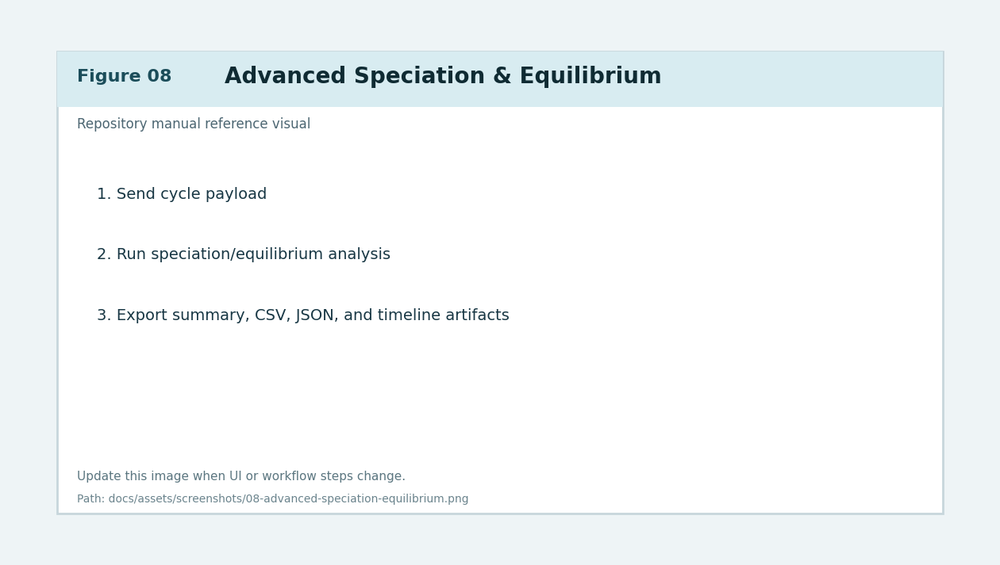
Figure 8. Advanced Solubility workflow with cycle timeline, exports, and ledger handoff.
Calculation Overview¶
Purpose and scope¶
This section is the calculation traceability contract for v4.13.6. It explains how displayed values are computed in Advanced Speciation and Analysis dashboards.
- Math Viewer is active-model only per run.
- Math Viewer includes a cycle selector and defaults to Latest cycle.
- Equations below are raw LaTeX blocks (no external MathJax dependency).
- Solver chemistry behavior is unchanged in this release; transparency and traceability were expanded.
Symbols, units, and constants¶
\begin{aligned}
&m_{\mathrm{CO_2}} &&\text{CO}_2\text{ mass (g)} \\
&n_{\mathrm{CO_2}} &&\text{CO}_2\text{ moles (mol)} \\
&MW_{\mathrm{CO_2}} &&\text{molar mass of CO}_2\ (\mathrm{g/mol}) \\
&m_{\mathrm{NaOH}} &&\text{NaOH mass (g)} \\
&MW_{\mathrm{NaOH}} &&\text{molar mass of NaOH}\ (\mathrm{g/mol}) \\
&V &&\text{solution volume (L)} \\
&I &&\text{ionic strength (mol/L)} \\
&C_T &&\text{total inorganic carbon concentration} \\
&K_{a1},K_{a2},K_w &&\text{carbonate/water equilibrium constants} \\
&\alpha_0,\alpha_1,\alpha_2 &&\text{fractions of }H_2CO_3^\ast,\ HCO_3^-,\ CO_3^{2-} \\
&\mathrm{pH} &&-\log_{10}[H^+] \\
&m_{\mathrm{required}} &&\text{total CO}_2\text{ required to hit target pH (g)} \\
&m_{\mathrm{uptake}} &&\text{cumulative uptake used by completion/gap tiles (g)}
\end{aligned}
Carbonate equilibria, pH, and temperature-adjusted constants¶
\begin{aligned}
K_{a1} &= 10^{-pK_{a1}}, \\
K_{a2} &= 10^{-pK_{a2}}, \\
K_w &= 10^{-pK_w}, \\
\mathrm{pH} &= -\log_{10}[H^+], \\
[OH^-] &= \frac{K_w}{[H^+]}.
\end{aligned}
When temperature-adjusted constants are enabled, the solver resolves (K_{a1}, K_{a2}, K_w) from the selected temperature, then propagates those values through speciation and residual equations.
Speciation fractions and species concentrations¶
\begin{aligned}
D &= [H^+]^2 + K_{a1}[H^+] + K_{a1}K_{a2}, \\
\alpha_0 &= \frac{[H^+]^2}{D}, \\
\alpha_1 &= \frac{K_{a1}[H^+]}{D}, \\
\alpha_2 &= \frac{K_{a1}K_{a2}}{D}, \\
[H_2CO_3^\ast] &= \alpha_0 C_T,\quad
[HCO_3^-] = \alpha_1 C_T,\quad
[CO_3^{2-}] = \alpha_2 C_T.
\end{aligned}
Ionic strength and activity-correction equations¶
I=\frac{1}{2}\sum_i c_i z_i^2
Debye-Huckel (full/capped):
\log_{10}\gamma_i=-\frac{A z_i^2\sqrt{I}}{1+B a_i\sqrt{I}}
Davies (limited):
\log_{10}\gamma_i=-A z_i^2\left(\frac{\sqrt{I}}{1+\sqrt{I}}-0.3I\right)
Pitzer-lite:
\ln\gamma_i=f(I)+\sum_j m_j(2B_{ij}+ZC_{ij})+\cdots
Closed-system vs fixed-(pCO_2) residual equations and charge balance¶
Closed-system charge residual root:
f([H^+])=[H^+]+[Na^+]-[OH^-]-[HCO_3^-]-2[CO_3^{2-}]=0
Fixed-(pCO_2) boundary:
[H_2CO_3^\ast]=p_{\mathrm{CO_2}}K_H
General charge-balance expression used for diagnostics:
R_q=[\text{cations}]-[\text{anions}]
CO2 dosing stoichiometry (NaOH / Na2CO3 / NaHCO3 transitions)¶
\begin{aligned}
\text{Stage 1: }&2\mathrm{NaOH}+\mathrm{CO_2}\rightarrow \mathrm{Na_2CO_3}+H_2O \\
\text{Stage 2: }&\mathrm{Na_2CO_3}+\mathrm{CO_2}+H_2O\rightarrow 2\mathrm{NaHCO_3}
\end{aligned}
Mass-mole conversions:
n_{\mathrm{CO_2}}=\frac{m_{\mathrm{CO_2}}}{MW_{\mathrm{CO_2}}},\quad
n_{\mathrm{NaOH}}=\frac{m_{\mathrm{NaOH}}}{MW_{\mathrm{NaOH}}}
Required CO2 logic and precedence¶
Requirement source precedence is deterministic:
\text{guidance\_model} \;\rightarrow\; \text{measured\_ph\_calibration} \;\rightarrow\; \text{planning\_reference}
If guidance-model additional CO2 is available:
\begin{aligned}
m_{\mathrm{additional}} &= m_{\mathrm{guidance\ additional}}, \\
m_{\mathrm{required}} &= m_{\mathrm{uptake}} + m_{\mathrm{additional}}.
\end{aligned}
Else if calibration total requirement is available:
\begin{aligned}
m_{\mathrm{required}} &= m_{\mathrm{calibration\ total}}, \\
m_{\mathrm{additional}} &= \max\left(m_{\mathrm{required}}-m_{\mathrm{uptake}},0\right).
\end{aligned}
Else planning-reference fallback:
\begin{aligned}
m_{\mathrm{required}} &= m_{\mathrm{planning\ reference\ final}}, \\
m_{\mathrm{additional}} &= \max\left(m_{\mathrm{required}}-m_{\mathrm{uptake}},0\right).
\end{aligned}
And:
n_{\mathrm{required}}=\frac{m_{\mathrm{required}}}{MW_{\mathrm{CO_2}}}
Completion metrics, target gap, and forecast¶
Raw planning completion:
C_{\mathrm{raw}}=\mathrm{clamp}\left(\frac{m_{\mathrm{raw\ uptake}}}{m_{\mathrm{planning\ reference}}},0,1\right)\times 100
Corrected planning completion:
C_{\mathrm{corr}}=\mathrm{clamp}\left(\frac{m_{\mathrm{corrected\ uptake}}}{m_{\mathrm{planning\ reference}}},0,1\right)\times 100
Equivalence completion:
C_{\mathrm{eq}}=\mathrm{clamp}\left(\frac{m_{\mathrm{uptake}}}{m_{\mathrm{equivalence}}},0,1\right)\times 100
Requirement-relative completion (guidance-gap progress bar interpretation):
C_{\mathrm{required}}=\mathrm{clamp}\left(\frac{m_{\mathrm{uptake}}}{m_{\mathrm{required}}},0,1\right)\times 100
Target gap:
\Delta m_{\mathrm{target}}=\max\left(m_{\mathrm{required}}-m_{\mathrm{uptake}},0\right)
Forecast:
\begin{aligned}
N_{\mathrm{remaining}}&=\frac{\Delta m_{\mathrm{target}}}{r_{\mathrm{tail}}}, \\
T_{\mathrm{remaining}}&=N_{\mathrm{remaining}}\cdot \bar{t}_{\mathrm{cycle}}
\end{aligned}
Model-by-model pathway details¶
Debye-Huckel Full¶
- Uses full ionic-strength-dependent Debye-Huckel activity correction.
- Predicted pH comes from equilibrium solve with activity-adjusted terms.
- Speciation uses (\alpha_0,\alpha_1,\alpha_2) with solved (H^+).
- Required CO2 is still dashboard precedence-driven (guidance -> calibration -> planning), not a separate model-only requirement channel.
Debye-Huckel Capped¶
- Same equation family as Debye-Huckel Full.
- Applies ionic-strength capping safeguards for stability/validity bounds.
- Downstream pH/speciation and requirement tiles follow the same mapping contract.
Davies Limited¶
- Uses Davies activity equation in limited ionic-strength regime.
- pH/speciation derive from charge/equilibrium solve under Davies (\gamma_i) corrections.
- Requirement/completion/forecast metrics are computed by shared summary logic after solve outputs are available.
Pitzer Lite¶
- Uses reduced Pitzer interaction terms ((B_{ij}, C_{ij})-style virial interactions).
- pH/speciation are produced with interaction-adjusted activities.
- Requirement/forecast use the same precedence and tile equations as other models.
Aqion Closed¶
- Uses closed-system charge-balance root form as primary boundary behavior.
- pH/speciation are computed from closed-system residual and carbonate fractions.
- Requirement metrics stay in shared dashboard summary path.
NaOH-CO2 Pitzer HMW (deepest detail)¶
This is the deepest and most traceable model path in the viewer/manual.
Context normalization:
\begin{aligned}
kg_{\mathrm{water}} &= \frac{m_{\mathrm{water}}}{1000}, \\
m_{\mathrm{NaT}} &= \frac{m_{\mathrm{NaOH}}/MW_{\mathrm{NaOH}}}{kg_{\mathrm{water}}}, \\
m_{CT} &= \frac{m_{\mathrm{CO_2}}/MW_{\mathrm{CO_2}}}{kg_{\mathrm{water}}}
\end{aligned}
Core solve outputs surfaced:
C_T=[H_2CO_3]+[HCO_3^-]+[CO_3^{2-}]
Runtime path gating:
- Rust path is used only when backend health/payload/parity guards pass.
- Python fallback is fail-closed and remains authoritative when Rust is unavailable/incompatible/unhealthy.
- The resulting pH/speciation feed requirement/completion/forecast equations exactly through the same shared summary contract.
Math Viewer stepwise contract¶
Each key entry in the expanded Math Viewer uses:
- symbolic equation,
- substituted numeric form,
- evaluated result,
- units,
- optional explanatory detail.
Sections emitted:
- Inputs / Constants / Basis Conversions
- Active-Model pH / Speciation Pathway
- CO2 Requirement / Completion / Forecast
- Cycle-Level Derivations
- NaOH Pitzer HMW Detail (active model = NaOH Pitzer)
Cycle selector behavior:
- Latest is default.
- Cycle-specific entries filter to selected cycle.
- Non-cycle global entries remain visible.
Equation-to-UI mapping table¶
| Equation / block | UI field(s) | Runtime key(s) / source |
|---|---|---|
| ( \mathrm{pH}=-\log_{10}[H^+] ) and model solve | Equilibrium pH (Guidance), Speciation Snapshot pH lines |
equilibrium_ph, latest_*_ph channels |
| ( \alpha_i ) fraction equations | Speciation Snapshot fractions, cycle-table fraction columns | fractions, latest_corrected_fractions |
| ( C_T=[H_2CO_3]+[HCO_3^-]+[CO_3^{2-}] ) | NaOH Pitzer detail, speciation diagnostics | model concentrations payload |
| Requirement precedence + (m_{\mathrm{required}}) | Target Gap & CO2 Needed tile, Forecast tile, summary text | co2_requirement_source, co2_required_for_target_ph_g |
| ( \Delta m_{\mathrm{target}}=\max(m_{\mathrm{required}}-m_{\mathrm{uptake}},0) ) | CO2 left to target / gap bars |
additional_co2_required_g |
| ( C_{\mathrm{raw}}, C_{\mathrm{corr}} ) | Completion gauges and reaction-progress text | planning_completion_pct, corrected_planning_completion_pct |
| ( C_{\mathrm{eq}} ) | Equivalence progress metrics | equivalence_completion_pct, corrected_equivalence_completion_pct |
| (N_{\mathrm{remaining}}, T_{\mathrm{remaining}}) | Forecast to Target tile | forecast_remaining_cycles, forecast_remaining_time_x, forecast_tail_rate_g_per_cycle |
| Cycle dose conversion ( \Delta m = \Delta n \cdot MW ) | Cycle-Level Derivations entries | per-cycle co2_moles, co2_g, co2_total_moles |
Compare Profiles Workflow¶
Purpose¶
Compare two profile runs side-by-side and quantify differential cycle/yield behavior.
Preconditions¶
- Two valid profiles exist with usable cycle/analysis context.
Inputs¶
- Compare tab profile selection controls.
- Side-specific plot settings and optional plot elements.
- Compare cycle table export controls.
Open In Cycle Analysisaction for side-specific marker review.
Step-by-step actions¶
- Open Compare tab.
- Assign profile A and profile B.
- Load each profile and validate status chips/diagnostics.
- Configure side-specific titles and rendering overrides if needed.
- Render both sides and inspect cycle/yield deltas.
- Use
Open In Cycle Analysisto inspect side marker fidelity. - Export compare cycle table CSV when needed.
- Optionally export compare interactive HTML if used in your reporting flow.
Expected outputs¶
- Side-by-side visual and table-based comparison evidence.
Common errors and recovery¶
- Error: one side blank or stale.
- Recovery: re-load profile bundle and re-render selected side.
- Error: mismatched axis ranges reduce comparability.
- Recovery: enable/refresh locked x-axis behavior and verify common range policy.
- Error: compare table empty.
- Recovery: ensure both profiles contain cycle outputs and cycle analysis completed.
Related exports/artifacts¶
- Compare cycle table CSV
- Compare interactive HTML/report artifacts (if enabled in workflow)
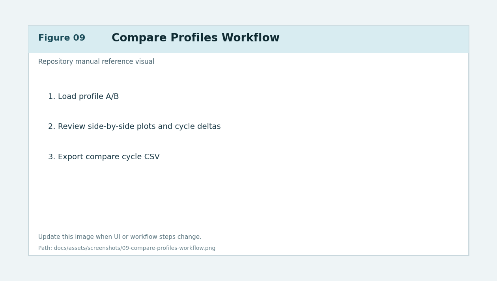
Figure 9. Compare tab profile assignment, render, and export workflow.
Ledger Workflow¶
Purpose¶
Capture cross-run metrics, support manual and prefilled entries, and export consolidated records.
Preconditions¶
- Optional profile/speciation outputs ready for prefill.
Inputs¶
- Ledger tab controls:
- add/edit/remove rows
- profile prefill actions
- sort/filter options
- custom columns/formula fields
- CSV export
Step-by-step actions¶
- Open Ledger tab.
- Add a new line manually or use profile/speciation prefill flow.
- Confirm identifiers (
Project #,Batch #,Item #) where required. - Review cycles, uptake, yield fields, and notes.
- Apply sorting/filtering to focus the current review set.
- Validate formula/custom-column outputs if configured.
- Export visible ledger rows to CSV.
Expected outputs¶
- Auditable run-level ledger entries suitable for operational tracking.
Common errors and recovery¶
- Error: prefill values missing.
- Recovery: ensure source profile contains cycle/speciation payloads and rerun prefill.
- Error: formula value invalid.
- Recovery: correct formula expression and permitted field references.
- Error: export file empty.
- Recovery: clear filters or ensure rows are visible before export.
Related exports/artifacts¶
- Ledger CSV export
- Profile metadata + cycle/speciation metrics snapshots
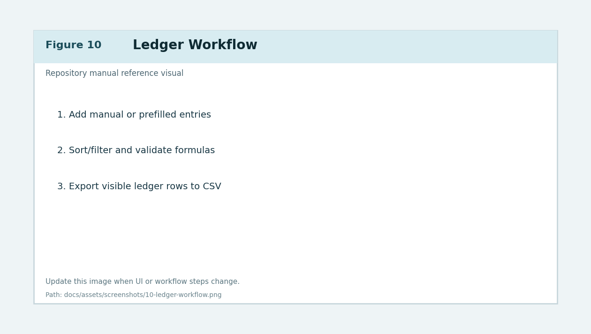
Figure 10. Ledger entry management, sorting/filtering, and CSV export.
Final Report Workflow¶
Purpose¶
Assemble and export final, shareable reporting packages using selected sections and layout rules.
Preconditions¶
- Required columns applied.
- Plot/cycle/speciation inputs available for selected report sections.
Inputs¶
- Final Report tab controls:
- title and narrative fields
- section selection and ordering
- orientation/layout mode
- section captions/headers
- template save/load actions
- generation actions (
PDF,PNG,HTML, combined)
Step-by-step actions¶
- Open Final Report tab.
- Enter report title and required narrative metadata.
- Select report sections and arrange section order.
- Configure orientation and fit/layout mode.
- Enable/disable section headers/captions and preview page layout.
- Save or load report templates as needed.
- Click Generate Final Report... and choose output type:
- PDF
- PNG summary
- Interactive HTML
- combined multi-format generation - Verify generated outputs and pagination/caption correctness.
Expected outputs¶
- Report artifacts matching configured structure and styling.
Common errors and recovery¶
- Error: report generation blocked by stale columns.
- Recovery: run Apply Column Selection again and retry.
- Error: combined plot unavailable for report.
- Recovery: regenerate combined plot and ensure required source traces exist.
- Error: HTML preview opens but missing pages.
- Recovery: ensure selected sections produce renderable figures/tables.
Related exports/artifacts¶
- Final report PDF pages
- Final report PNG summary
- Final report interactive HTML
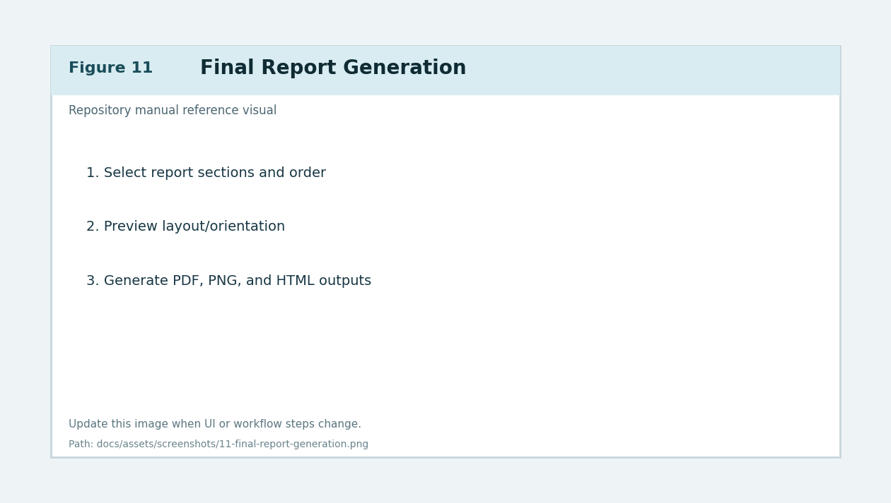
Figure 11. Final Report tab configuration and multi-format generation workflow.
Profiles and Settings Persistence¶
Purpose¶
Store and restore repeatable analysis state across sessions and datasets.
Preconditions¶
- A valid configuration has been created in one session.
Inputs¶
- Profiles menu actions.
- Settings persistence behavior (
settings.jsonandprofiles/payloads).
Step-by-step actions¶
- Configure tabs and workflows for the current run.
- Save profile from Profiles menu.
- Load profile in a future session and verify expected state restoration.
- Confirm restored state across:
- selected traces
- plot settings
- cycle markers (if captured)
- compare and final report preferences - Export selected profile when needed for transfer/sharing.
Expected outputs¶
- Consistent reproducibility for recurring workflows.
Common errors and recovery¶
- Error: profile restore incomplete.
- Recovery: confirm profile schema fields and re-save from current app version.
- Error: settings corruption symptoms.
- Recovery: inspect/reset
settings.json, then reload known-good profile.
Related exports/artifacts¶
profiles/*.jsonsettings.json
Troubleshooting and Recovery Matrix¶
Purpose¶
Provide actionable recovery paths for common user-impacting issues.
| Symptom | Likely cause | Recovery |
|---|---|---|
| Sheet selector empty | Workbook path invalid or locked file | Re-open workbook, verify path and file access |
| Apply Column Selection fails | Missing required mapping | Re-map required columns and apply again |
| Combined plot missing axis | Axis role not enabled/assigned | Enable right/third axis and confirm dataset assignment |
| Cycle count unrealistic | Detection tuning mismatch | Adjust smoothing/snap/refine thresholds and rerun |
| Speciation export unavailable | No valid analysis payload | Re-send cycle payload and rerun analysis |
| Compare rows empty | Missing cycle data in one profile | Recompute cycles and reload profile pair |
| Ledger prefill incomplete | Source profile missing metadata | Update source profile or fill fields manually |
| Final report blocked | Columns changed since last apply | Re-run Apply Column Selection, then regenerate |
Related exports/artifacts¶
- Debug logs:
gl260_debug.log* - Validation helper:
scripts/validate_rust_backend.py
Advanced / Power User Appendix¶
Purpose¶
Document optional runtime controls and diagnostics without interrupting core user flow.
Included advanced topics¶
- Runtime/dependency diagnostics and capability checks.
- Developer Tools logging/performance controls.
- Optional Rust acceleration validation.
- Timeline table export validation utilities.
- Interpreter/environment consistency checks.
Recommended advanced workflow¶
- Use installer script for deterministic environment setup.
- Validate runtime dependencies before benchmark-heavy operations.
- Use diagnostics when output parity or performance behavior changes.
- Keep fallback behavior available and verified.
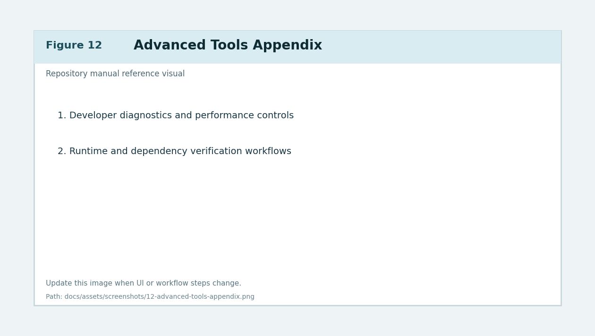
Figure 12. Advanced tools and diagnostics appendix reference visual.
Screenshot Contract and Asset Index¶
Purpose¶
Define required structure and quality criteria for screenshot-driven documentation.
Contract¶
- All manual images are stored in
docs/assets/screenshots/. - Filenames follow a numeric prefix for deterministic ordering.
- Every image reference includes descriptive alt text and a figure caption.
- UI-heavy sections should use numbered callouts in image content where practical.
- If UI changes invalidate screenshots, update both image and caption in same patch.
Asset index¶
| Figure | File | Covered workflow |
|---|---|---|
| Figure 1 | assets/screenshots/01-application-navigation-map.png |
Navigation map |
| Figure 2 | assets/screenshots/02-data-import-sheet-selection.png |
Data import + sheet selection |
| Figure 3 | assets/screenshots/03-column-mapping-apply.png |
Column mapping |
| Figure 4 | assets/screenshots/04-plot-settings-overview.png |
Plot settings |
| Figure 5 | assets/screenshots/05-combined-triple-axis-workflow.png |
Combined plot |
| Figure 6 | assets/screenshots/06-plot-elements-editor.png |
Plot elements |
| Figure 7 | assets/screenshots/07-cycle-analysis-auto-manual.png |
Cycle analysis |
| Figure 8 | assets/screenshots/08-advanced-speciation-equilibrium.png |
Advanced speciation |
| Figure 9 | assets/screenshots/09-compare-profiles-workflow.png |
Compare |
| Figure 10 | assets/screenshots/10-ledger-workflow.png |
Ledger |
| Figure 11 | assets/screenshots/11-final-report-generation.png |
Final report |
| Figure 12 | assets/screenshots/12-advanced-tools-appendix.png |
Advanced appendix |
Related maintenance rules¶
- Release updates must follow
RELEASE_CHECKLIST.md. - Do not merge user-facing workflow changes without manual updates.
Versioning Note¶
This manual tracks application behavior for the currently active repository state and must be updated incrementally with each user-facing feature change.